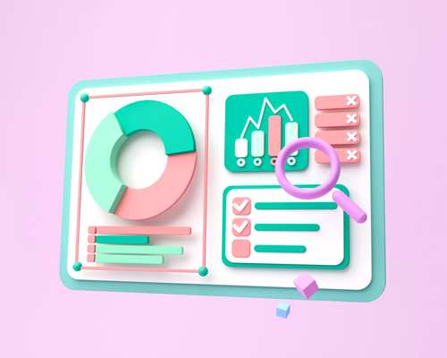
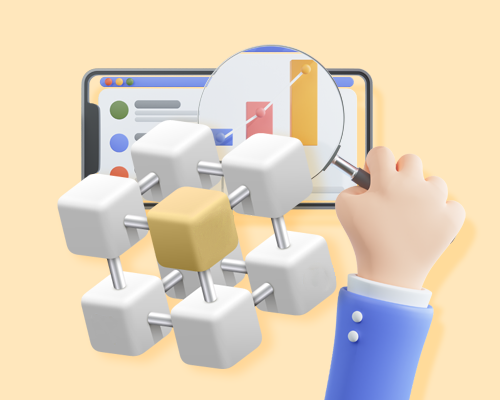
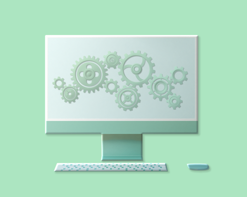
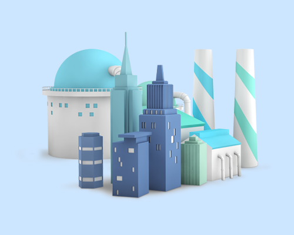

ankus 1.0
ankus 1.0은 HaDoop을 기반으로 제작된 빅데이터 토탈 솔루션으로 Library, Analyzer, Optimizer, ankus Crawler v1.0, ankus Lite로 구성되었습니다. 자체 기술력으로 개발한 인공지능 기반의
‘앵커스 다스옵스’가 탄생할 수 있는 초석이 되어주었으며 현재는 지원하지 않는 버전입니다.
현재는 지원하지 않는 버전입니다.
-
Library
Hadoop 기반
데이터 마이닝과
머신러닝 라이브러리
-

Analyzer
Hadoop 기반
데이터 마이닝과
머신러닝 분석 도구
-

Optimizer
Hadoop 기반
예측 모델 최적화 모듈
-

ankus Crawler v1.0
웹 데이터 수집기 모듈
-

ankus Lite
ankus Library를 활용한
산업별 분석 서비스